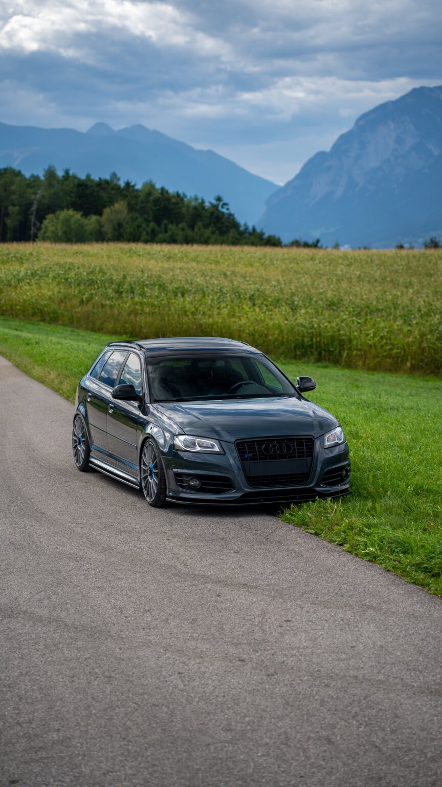

MAPQ / HIGHLIGHTS
Cars.
Automobile zwischen Asphalt und Alpen.



Deine Idee fürs nächste Shooting?
Shooting anfragen ↗MAPQ / HIGHLIGHTS
Automobile zwischen Asphalt und Alpen.

Deine Idee fürs nächste Shooting?
Shooting anfragen ↗